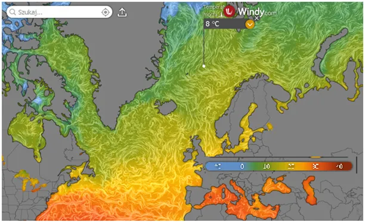
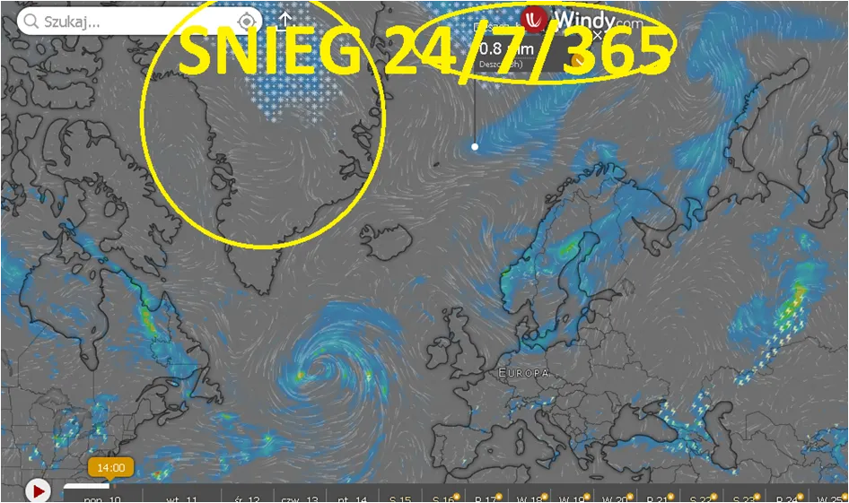

Klima + lekarz = droga recepta.
Klima + lekarz = droga recepta.
To rzadki widok w mediach, mapa przedstawiająca wysokość izotermy zero. Gdy lecimy samolotem na 10 km wiemy lub nie, że za oknem jest minus 50 C i niewiele sobie z tego robimy, bo w samolocie panuje przyjemny chłodek z klimatyzacji.
O tym jak jest na zewnątrz przekonało się kilku śmiałków, którzy próbowali podróżować poza kabiną samolotu, najczęściej w komorze podwozia. Skrajnie drastyczny przypadek to sytuacja, gdy podczas lądowania nad Londynem, mechanizm podwozia wypchnął zamrożone ciało “migranta” i ten jako bryła lodu wpadł do ogródka i zdemolował kwiatki-rabatki. Jednym słowem sam wykopał sobie grób między pelargoniami.
Atmosfera Ziemi może mieć ok. plus 50 st. C tuż nad rozgrzanymi skałami Półwyspu Arabskiego i minus 50 C kilka km ponad naszymi głowami. Punkt, a dokładnie wysokość, gdzie jest zero, czyli granica między plusem a minusem to izoterma zero. Dziś mamy tę warstwę ok. 3800 m nad Polską, gdy w listopadzie lub wcześniej przeżyjemy pierwsze przymrozki, warstwa ta dokładnie dotknie naszych pól i lasów.
Pogoda to zmiany w atmosferze w pionie, ale my lubimy oglądać je na mapkach w poziomie, bo to brzmi lepiej że, “z północy nadciągną masy arktycznego powietrza”. Niby to prawda, ale te masy nadciągną z góry, po prostu obniży się izoterma zero, bo energia słoneczna nagrzewająca grunt i wody wokół nas będzie za mała, by ogrzać do temperatur dodatnich powietrze nad tym ogrzewanym obszarem. Na mapce widzimy, że dziś nad Polską zero mamy 3700 m nad głowami, ale już u wybrzeży Szkocji jest to tylko 1100 m a dalej nad północ mapa robi się jasna i tam gdzie jest biało panuje mróz nad samym oceanem.

Ocean tam nie zamarza bo jest słony i fale nieustannie poruszają wodą, płynie tam też ciepły Prąd Zatokowy, widoczny na mapie temperatury wody, gdzie widzimy 8 C. Tam właśnie dochodzi do silnego studzenia i parowania oceanu. Wilgoć się unosi, leci nad Grenlandię, tam na kilku km wysokości panuje zawsze duży mróz.

Śnieg pada tam cały rok: zima, lato, w dzień i nocy i nigdy nie topnieje, dlatego Grenlandia od 11 000 lat absorbuje coraz więcej lodu kosztem oceanów, których poziom w tej sytuacji musi opadać, bo analogicznie jest na wielkim kontynencie po drugiej stronie globusa, na Antarktydzie. Ten jasny pas między Szkocją i Skandynawią to welon jesieni, jutro u nas wietrznie i 10 C mniej niż dziś, zatem zmieniamy garderobę i koniecznie wyłączamy klimę, którą trzeba rozebrać i umyć, aby nie wyhodować sobie grzybni, która nas mocno alergizuje i po kolejnym włączeniu klimy za kilka dni wstrzelimy sobie miliony zarodników grzybni do samochodu, czy sypialni. Najprościej klimy nigdy nie kupować/używać i dodatkowo oszczędzić na lekarzach i farmaceutach.
Paweł Klimczewski